A magical place where you feel at home, everything is designed to make you feel good!
4,7on Google · 24 reviews
Domaine des Chabriers
A manor house over 600 years old at the foot of the Vercors. Gather your loved ones, celebrate a big day or take some time for yourself.
- Poolwith sun loungers
- 3-hectare groundspeace and quiet
- Reception hallover 300 m²
- 2 gîtes45 guests
The estate
Three ways to enjoy the estate
Its history
Over 600 years of character
Here you stay in a former 15th-century farmhouse, lovingly restored.
- 1790
L. P. M. Enemond, justice of the peace in Chabeuil, buys the estate. He and his descendants turn it into a manor house and country retreat.
- 1830
F. de Lambert, his descendant, lays out the grounds with their avenue of plane trees and ornamental pond. He owns 30 hectares of farmland. As mayor of Ourches, he sets up a silkworm house and a village distillery on the estate. The large retting pool is used by all the villagers to soften their hemp.
- 1930
Léon Faure buys the estate and succeeds him as mayor. The château then shelters Resistance fighters: the maquis is active in the village.
- 1945
The farm shed, today's reception hall, is bombed. After the war, intensive farming arrives with a new henhouse for over 2,000 hens!

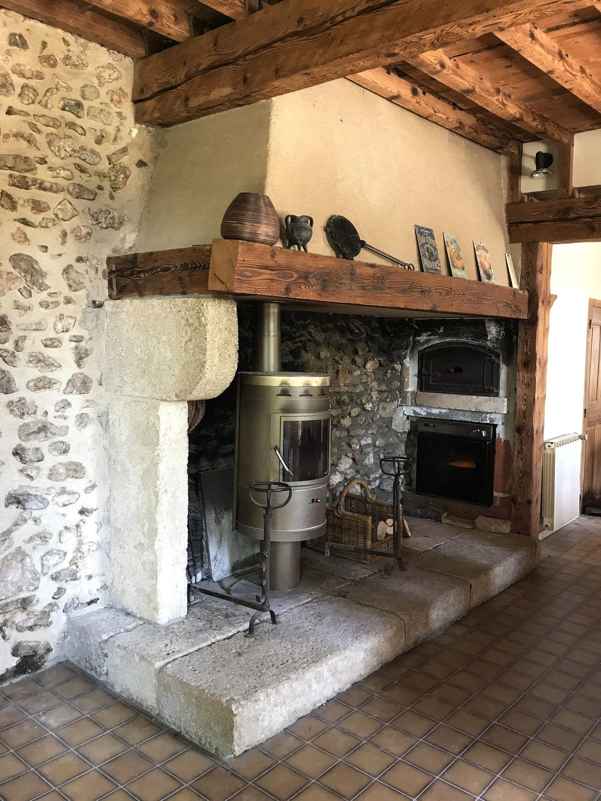
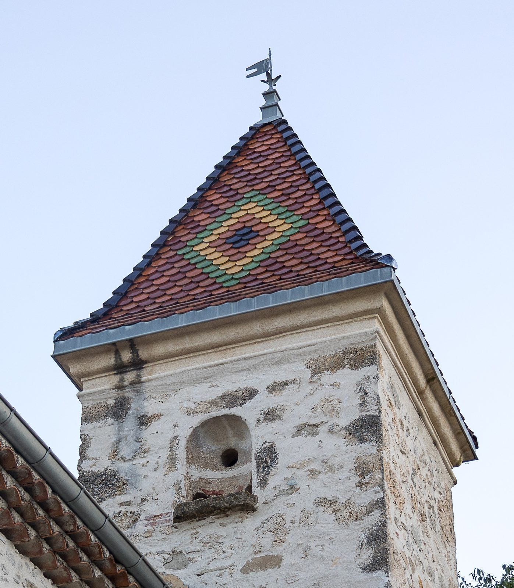
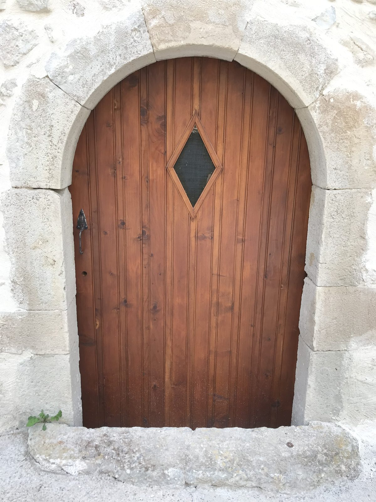
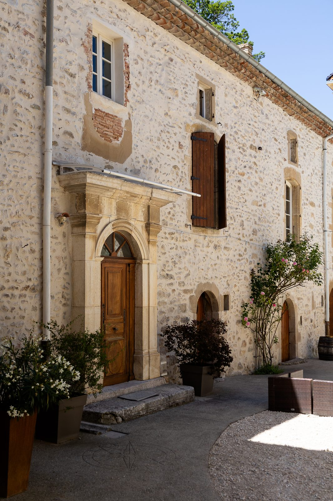
The map
The estate at a glance
Four buildings, four letters: here is what each one holds.
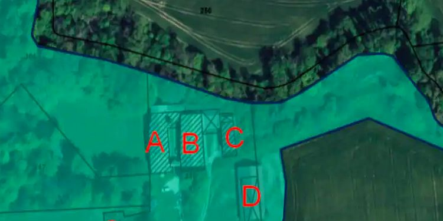
 AThe châteauYou rent the whole first floor with its terrace · access to the groundsSee gîte A
AThe châteauYou rent the whole first floor with its terrace · access to the groundsSee gîte A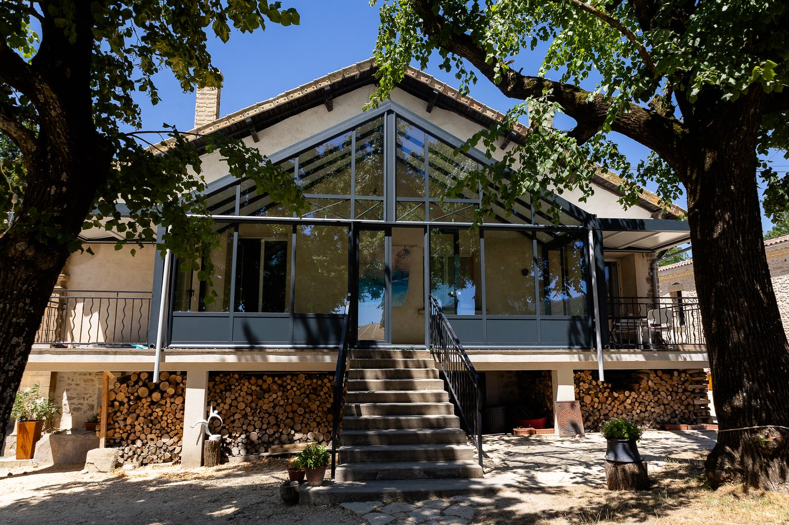
BThe verandaThe owners' house · guest welcome CThe farmhouseGroup gîte on the ground floor, accessible studio, 2 flats upstairsSee gîte C
CThe farmhouseGroup gîte on the ground floor, accessible studio, 2 flats upstairsSee gîte C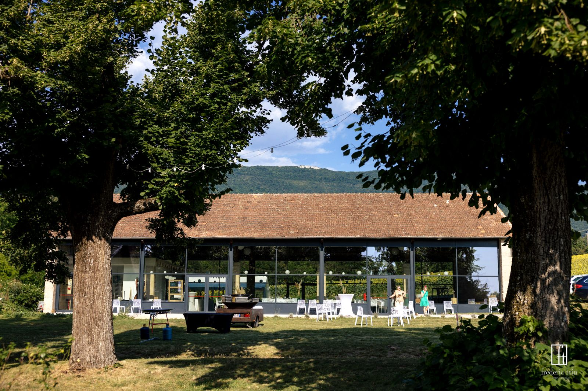
DThe reception hallWeddings and all kinds of eventsSee the hall
Your hosts
Céline and Yves
They restored the estate with passion. And it is their welcome that guests mention most in their reviews.
- ★★★★★
The place is peaceful and the hosts are very welcoming and kind.
Willy, on Google - ★★★★★
The owner looks after you beautifully and is available at any time.
Jean François M., on Google - ★★★★★
Céline is a remarkable host
Catherine R., on Google
In pictures
The estate through the day
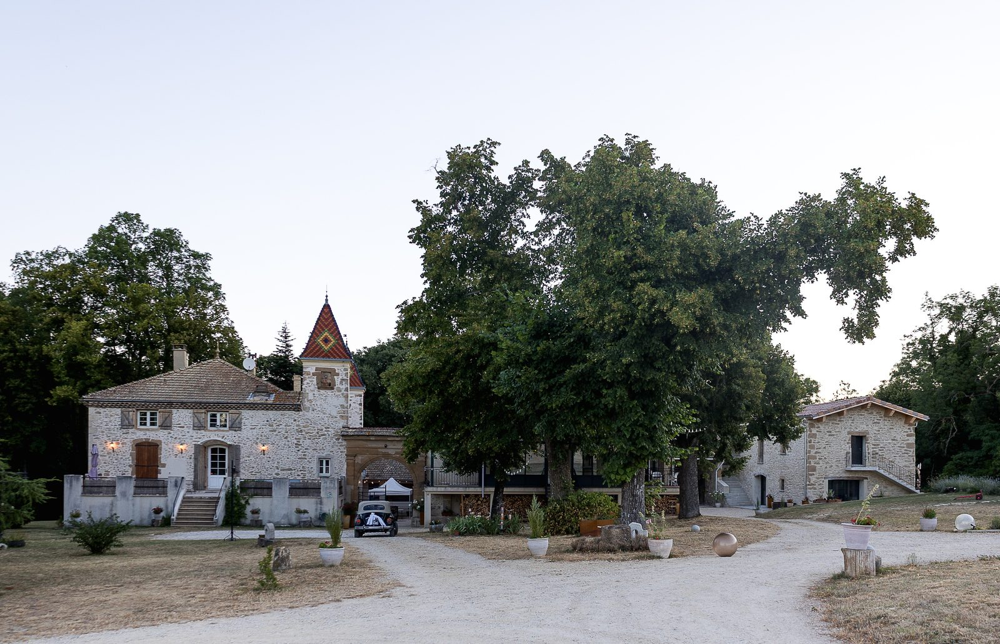
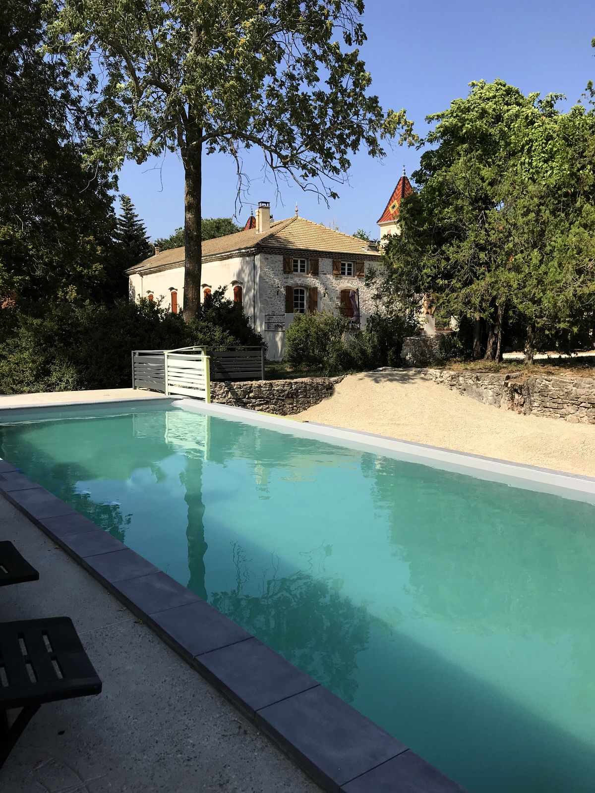
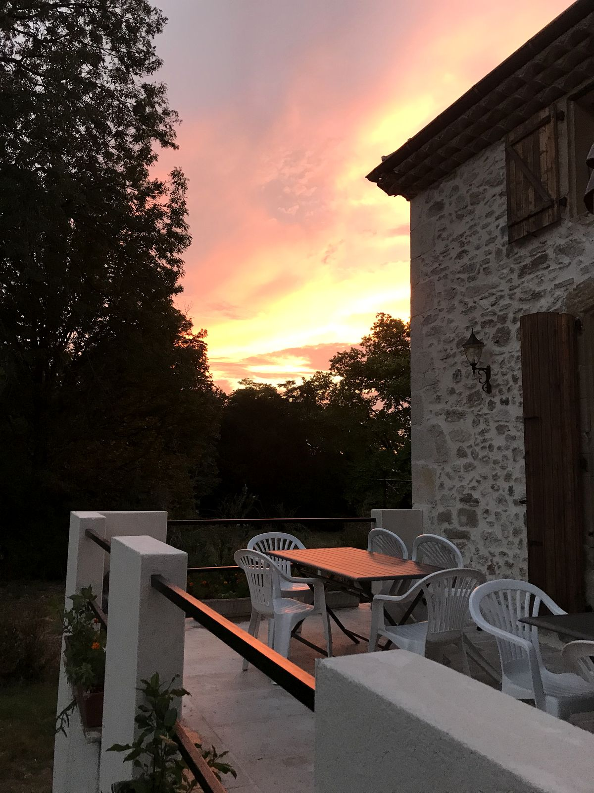


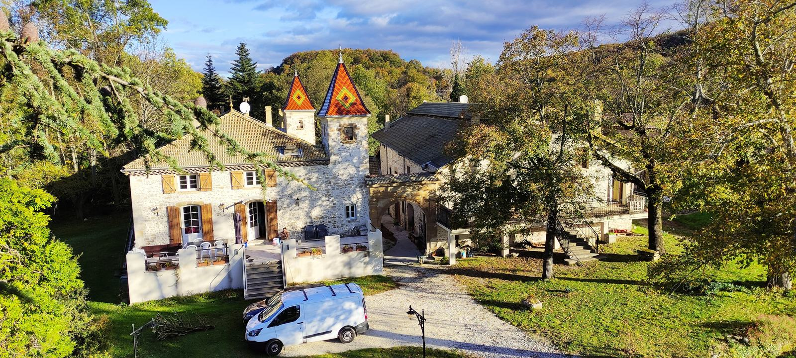


They came
What our guests have to say
A beautiful and restful place.
Simply an extraordinary place to recharge your batteries at one with nature.
A haven of greenery and peace, with a warm welcome that adapts to everyone's needs
A lovely discovery with the most pleasant welcome and owners who are always on hand.
A magnificent, beautifully renovated building.
The ideal place to recharge, see beautiful scenery and meet wonderful people.
A lovely, very peaceful spot, a beautiful house full of charm and a truly charming host!
A place of welcome and serenity.

Your stay starts here
A stay with friends, a family celebration, a wedding or a stage? Tell us your dates and your plans.
Ask about a date